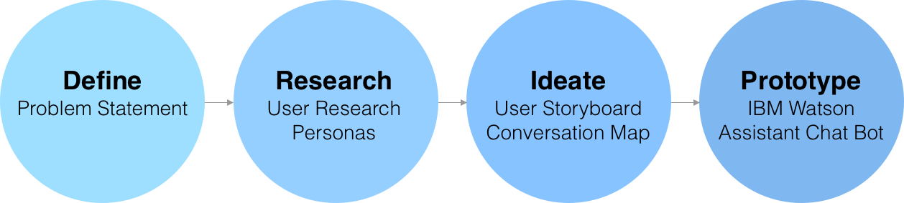
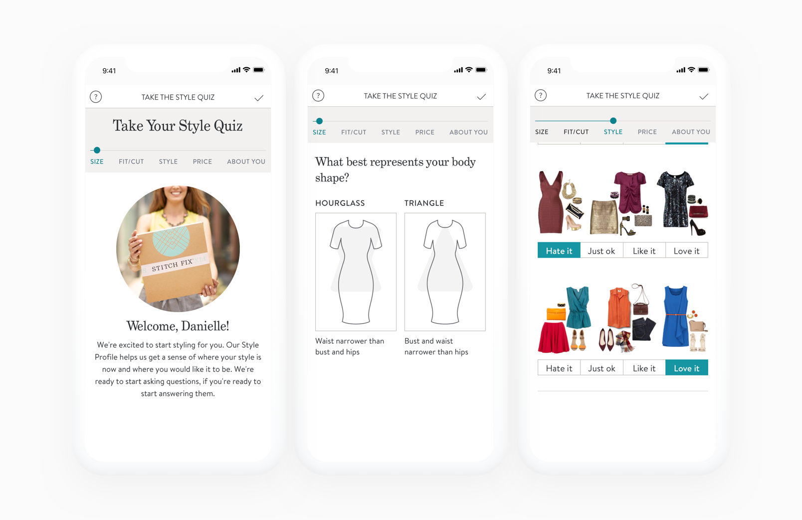
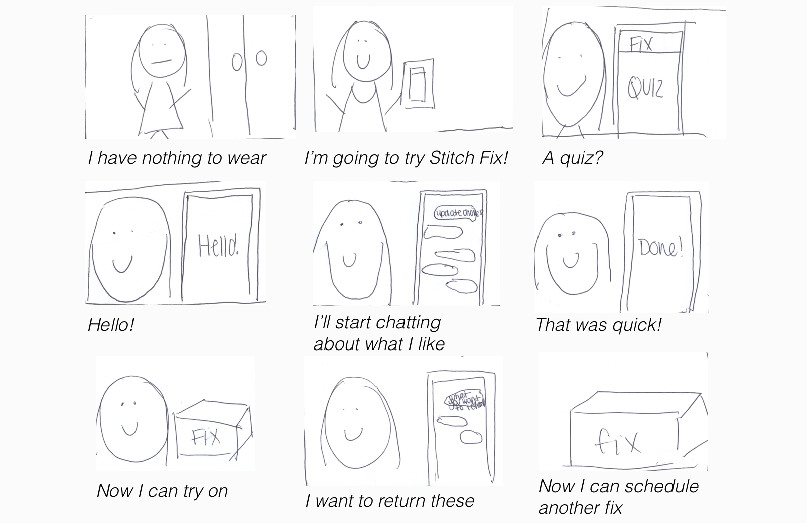
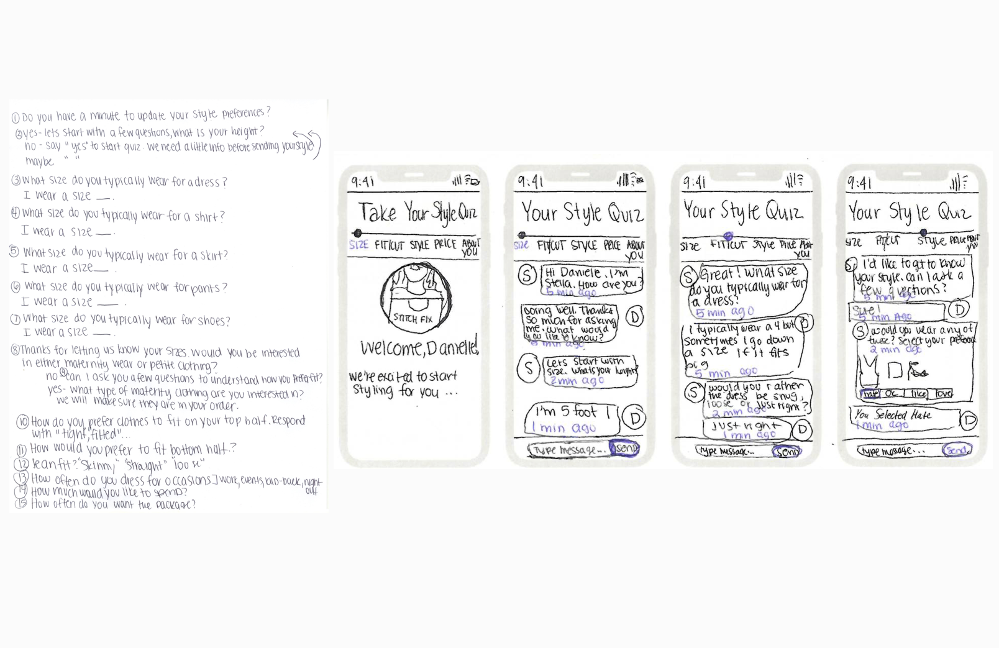
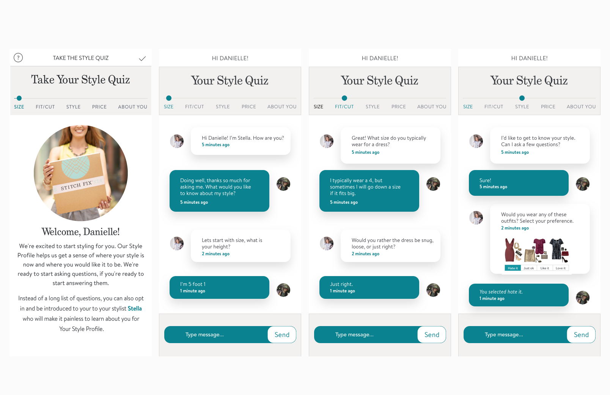

IBM Watson AI &
Stitch Fix Collaboration
Project | UX Design & Human/AI Interactions
My Role | UI/UX Designer
Tools | IBM Watson, InVision, Sketch, Illustrator, Photoshop
Research Methods | In-person Interviews, Comparative Analysis, Prototyping, Usability Testing

The Subscription Box
The way Stitch Fix works right now, users must sign up online in the app and create their style profile by answering a comprehensive series of questions about their sizing,
fit, preferences, style, and social media handles. Then users can leave a note for their 'stylist' explaining what type of items that they would like
to see in their next fix. This is all done online or through the app. Once the 'fix' ships and arrives at your home, included are five clothing or accessory items, a note from
your stylist about why they chose the items they did, pictures of ways to style each piece for day or night, and a list of pricing.
All of this is done without looking or speaking to a person.

How can AI transform the style quiz by learning about users?
I challenged the aspect of the style profile by understanding how AI could learn much more quickly about personal style compared to doing the quiz yourself. Using IBM Watson will also feel more comfortable, because you will feel as if you are having an effortless conversation with a friend. 'Stylists can get a better understanding of what the customer likes and this will leave the customer feeling good, and not so frustrated by wasting time taking the onboarding quiz.
Problem Statement
I created a interface for the Stitch Fix style quiz using IBM Watson that feels personal and will leave the customer feeling like the interaction was painless.
Persona
Based on my research and analysis, I created a persona.

Storyboard, How it Works
Instead of the user getting frustrated by a long quiz, they will have an easy conversation with a chat bot around their personal style and measurements. Below is the journey that the user will take to use IBM Watson with Stitch Fix during a day they can't find anything to wear. An effective way to progress was to sketch out the scenarios of how a potential user would interact with my product.
Prototype 1: Paper

Prototype 2: Mapping the Conversation with IBM Watson
Chatbots, when applied to the right industry can be incredibly helpful. With Watson Assistant, Watson will classify the intelligent personal style of the customer using a mathematical filtering technique. Watson technology will store your personal data, and overtime will get to know your personal style even better.
Wireframes

Prototype 3: Look and Feel